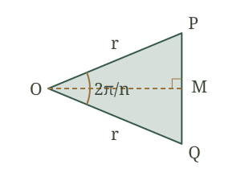

楔子 · 圆的面积
初入山门，拦路的没有妖魔，只有石板上画着的一个圆。旁边留下一问：半径为 r 的圆，面积是多少？
你大概会不假思索地答：S=\pi r^2。这么熟悉的公式，也配做第一关的难题？正要往前走，石板上却又浮出一行字：“答案不错。可是，为什么？”
先把记住的公式放在一旁。矩形的面积，我们会算；三角形的面积，可以借助拼接来求；遇到一个多边形，也能把它分成若干个三角形，再将面积相加。这些招式，你早已用得熟练。
可眼前偏偏是一个圆。试着在圆里画一个正方形，面积算出来了，四周却空着几块；再换一个边数更多的多边形，空隙小了，仍旧没有消失。你不断加边，图形越来越像圆，可只要边数还是有限的，它就终究不是圆。差得很少，能算作完全相等吗？
也许你还记得，把圆切成许多扇形，再交错拼成一个近似的长方形。可那个“近似”，究竟如何才能成为“准确”？一幅看起来越来越像的图，足以说明面积恰好等于 \pi r^2 吗？
难处终于显出了真身：我们会算有限个直边图形的面积，却还缺少一座桥，把一次次近似带到一个确定的答案。仅凭目前掌握的有限分割与拼接，我们还不能完成这一步。 那座尚未搭起的桥，正是本回要学习的“极限”。
先把这个圆留在山门前。待我们习得新的本领，再回来回答它：如何通过极限，求出圆的准确面积？这便是第一关的大 Boss。
第一节 · 初识对手
要闯过这一关，先得认清对手。圆的面积暂时不会求，但圆里面的多边形，我们会算。于是，先固定一个半径为 r>0 的圆，在里面画一个内接正多边形：“内接”是说顶点都在圆上，“正”是说各边相等、各角也相等。
把边数记为 n，这个多边形的面积记为 A_n。这里的下标是一张身份牌：A_3 是正三角形的面积，A_4 是正方形的面积，A_6 是正六边形的面积。圆的大小始终不变，改变的只有边数。


同一个圆，六种边数。绿色部分是多边形，浅色空隙是尚未覆盖的部分。
先看图：边数增加后，多边形的边界似乎越来越贴近圆。但眼睛只能帮助我们发现线索。要追踪这种变化，还得把图形变成可以计算的数。
从一个三角形算起。 连接圆心与每个顶点，内接正 n 边形便被分成 n 个完全相同的等腰三角形。它们的两条腰都是圆的半径 r，顶角合起来是一整周，所以每个顶角为
\theta=\frac{360^\circ}{n}=\frac{2\pi}{n}\quad\text{（弧度）}.

还记得三角形的“底乘高除以二”吗？高 OM 把顶角平分，在一侧的直角三角形中，半条底边为 r\sin(\pi/n)，高为 r\cos(\pi/n)。因此，这一块的面积是
\frac12\times 2r\sin\frac{\pi}{n}\times r\cos\frac{\pi}{n} =\frac12r^2\sin\frac{2\pi}{n}.
最后一步用了倍角公式 2\sin t\cos t=\sin(2t)。把这 n 块面积相加，就得到我们需要的计算规则：
\boxed{A_n=\frac{nr^2}{2}\sin\frac{2\pi}{n}},\qquad n=3,4,5,\ldots.
这里的 \pi 用于角度的弧度表示；推导只用了三角形面积与三角函数关系，没有使用圆的面积公式。比如正方形对应 n=4，于是 A_4=2r^2\sin(\pi/2)=2r^2，也可以用对角线长为 2r 来核对这个结果。
让边数动起来。 为了便于比较，下面取 r=1，逐个代入公式。面积均保留六位小数，计算正弦时使用弧度制。表里只选了若干个边数；没有列出的 n=7,9,10,\ldots 也各有自己的面积值。
| 边数 n | 面积 A_n（r=1） |
|---|---|
| 3 | 1.299038 |
| 4 | 2.000000 |
| 5 | 2.377641 |
| 6 | 2.598076 |
| 8 | 2.828427 |
| 12 | 3.000000 |
| 24 | 3.105829 |
| 48 | 3.132629 |
| 96 | 3.139350 |
| 192 | 3.141032 |
| 1000 | 3.141572 |
观察与讨论
- 表中的面积怎样变化？变化的幅度是否相同？选取 n=12,24,48,96，比较每次边数翻倍后面积增加了多少。
- 后几行的数字让你想到了哪个熟悉的数？你猜测，当边数继续增加时，面积会趋向哪里？先写下猜想和理由。
- 如果两个面积在保留六位小数后完全相同，能否断定它们真正相等？图形看不出空隙，是否就意味着空隙已经消失？
- 这十一行数据，足以说明所有更大的边数都遵循同样的规律吗？要把观察变成结论，我们还缺少什么？
不妨先与同伴交换看法，再继续往下读。表格能给出线索，却不能代替对所有情形的论证。 圆的准确面积，仍是等待我们攻克的问题。
至此，圆的内接多边形给了我们一串按边数排列的面积：
A_3,\ A_4,\ A_5,\ \ldots.
这样的、按次序排列的一串数，叫做数列。我们眼前的对手，已经从一个圆，变成了这串数及其变化规律。为了把它描述得更清楚，接下来要引入集合与函数：前者说明研究哪些对象，后者说明边数与面积怎样对应。
第二节 · 再识对手
上一节算出的 A_3,A_4,A_5,\ldots，在数学上组成一个数列。严格地说，A_n 表示其中对应边数 n 的那一项，整串面积才是我们要研究的数列。
要搞清楚这串数，先要回答两件事：哪些对象可以参与？它们之间怎样对应？ 为此，我们先引入集合与映射。集合把允许的边数、可能的面积值分别组织起来；映射则把每个边数与它唯一对应的面积连接起来。
集合
同一个圆，我们可以研究它的颜色、位置，也可以研究内接多边形的边数和面积。为了回答眼前的问题，先把无关的细节放下，只留下边数 n与面积 A_n。这便是抽象的第一步：从具体的图形中，提取我们要研究的量。
所有允许的边数放在一起，得到集合 D=\{3,4,5,\ldots\}；面积都是正实数，因此可以把它们放在正实数集 B=(0,+\infty) 中。集合把我们选定的对象组织起来，让“研究哪些东西”有了明确的边界。 注意，B 只是容纳面积值的范围，并不是说其中每个数都能成为这个圆的某个内接正多边形的面积。
集合不关心排列次序，而数列要保留每一项的位置。仅仅把面积值收集起来还不够：我们还必须知道，哪个边数对应哪个面积。这就要请出后面的映射与函数。
自然数集— \mathbb{N} = \left\{0, 1, 2, 3, \cdots \right\}实数集— \mathbb{R} = \left\{x: -\infty < x < \infty \right\}满足不等式 x-3<10 的所有实数 x— A=\left \{x < 7\right \}
我们把所要研究的对象统称为元素 (element), 这些元素所组成的总体叫做集合 (set). 一般用大写字母如 A, B, C 表示集合, 用小写字母如 x 或 a, b, c 来表示集合中的元素.
- 如果 x 是集合 A 的元素, 就说 x 属于 集合 A , 记作 x\in A ;
- 如果 x 不是集合 A 中的元素, 就说 x 不属于 集合 A, 记作 x \notin A.
- 不包含任何元素的集合叫做 空集 (emptyset), 记为 \varnothing.
映射
有了边数的集合 D 和容纳面积值的集合 B，还差一条连接它们的规则。上面的公式恰好给出了这条规则：输入 n=3，得到 A_3；输入 n=4，得到 A_4。圆的半径固定以后，每一个允许的边数，都唯一地确定一个面积。
这种从一个集合出发，为其中每个元素指定唯一输出的对应关系，叫做映射。先把它的一般含义说清楚，再来看数与数之间的对应。
映射 (map) 描述了从一个集合到另一个集合的某种对映关系. 设 A, B 是两个集合, 如果存在一个对映关系 f, 使得集合 A 中的每个元素都唯一的对映到 B 中的一个元素, 则称 f 为从 A 到 B 的映射, 记作 f: A \rightarrow B
映射 f 把集合 A 中的元素 a 对映到 B 中的元素 b, 可记作 f(a) = b 此时 b 称为 a 的象, a 称为 b 的原象.
映射可以通过下面的图像来理解:

图中箭头表示了集合 A 中元素与集合 B 中元素的对映关系.
根据定义, 映射需要满足两个要求: 随处取值, 唯一对映.
- 随处取值是指 A 中的任何一个元素在 B 中都有对映.
- 唯一对映是指 f 可以把 A 中的不同元素映射到 B 中的同一个元素, 但不能把 A 中的一个元素映射到 B 中的多个元素.
把一个人对应到他喜欢的颜色，可能同时得到好几种颜色，这条规则就不满足“唯一对应”。而在半径固定的圆内，一个边数只对应一个内接正多边形的面积，规则 n\mapsto A_n 满足映射的要求。
第三节 · 火眼金睛
现在，我们已经认识了集合与映射。再看面积的计算规则 n\mapsto A_n：输入是数，输出也是数。这样的对应，在本课程中称为函数；当输入按整数一个接一个地取值时，就得到了数列。这一节，我们把它们的关系说清楚，再用几个例子认一认。
函数
函数是一种特殊的映射: 从数集 A 到数集 B 的映射 f:A \rightarrow B 称为函数 (function). 函数可写成 y = f(x) 的形式, 其中 x 称为自变量, y 称为 x 对映的函数值.
数列
数列是一类特殊的函数：输入是依次取值的整数，输出是每个位置上的数。通常以正整数 1,2,3,\ldots 为下标，写成 a_n，也可以写成 a(n)；a_n 表示第 n 项，\{a_n\} 表示整个数列。
我们的面积数列从 n=3 开始，以便让下标直接表示边数。它就是函数
A:D\longrightarrow B,\qquad n\longmapsto A(n)=A_n=\frac{nr^2}{2}\sin\frac{2\pi}{n}.
这里的定义域是 D=\{3,4,5,\ldots\}，不是一个连续区间：多边形不能有 3.5 条边。若希望从第 1 项开始编号，只需令 a_k=A_{k+2}，研究的仍是同一串面积。
例子
每次增加同样多。 从第 1 天起，每天存入 10 元，暂不考虑利息和支出。第 n 天存完后的总额是 a_n=10n，前几项为 10,20,30,40,\ldots。输入是天数 n=1,2,3,\ldots，每个输入都有唯一的总额，所以这是一个数列，也是一种函数。
每次取一半。 一条长为 1 的绳子，每次留下现有长度的一半。第 n 次之后的长度是 b_n=2^{-n}，前几项为 \frac12,\frac14,\frac18,\frac1{16},\ldots。它也是数列，不过它的值在减小。数列并不一定像面积表中的数那样增加。
输入可以连续变化。 正方形的边长为 x>0 时，面积为 f(x)=x^2。x 可以取 1、1.5、\sqrt2 等任意正实数，这是一个定义在区间 (0,+\infty) 上的函数。如果只取整数边长 x=n，就得到数列 c_n=n^2，前几项为 1,4,9,16,\ldots。
回看我们的对手。 固定 r 后，A_n=\frac{nr^2}{2}\sin\frac{2\pi}{n} 把边数 n=3,4,5,\ldots 对应到面积。它与前面的数列一样，都有明确的输入范围和取值规则；公式更复杂，并不改变它作为数列的身份。
同样写着“平方”，为什么 f(x)=x^2（x>0）与 c_n=n^2（n=1,2,\ldots）的研究对象不完全相同？请从允许的输入说起。再想想，若要画图，数列中的各点能否随意连成一条曲线，并把连线上的点也当成数列的取值？
回看山门前的那个圆：集合界定了允许的边数与面积的取值范围，函数给出了从边数到面积的规则，数列则把一次次计算按边数排成了队。至此，我们已经认清了要追踪的对象。
原来的“圆的面积怎么算”，现在可以化成一个具体的问题：当整数 n 不断增大时，A_n 是否会趋近某个确定的数？如果会，这个数为什么就是圆的面积，又该怎样求出来？
描述清楚问题，还不等于解决问题。我们已经知道对手在哪里，接下来要学的“极限”，才是研究这串数最终趋向何处的本领。
第四节 · 动中取静
回到那串面积 A_3,A_4,A_5,\ldots。圆的半径始终固定，边数却在增加：三条、四条、五条……多边形也随之改变，面积一次次重新计算。在动的，是边数与对应的面积值。
表中的数字由 1.299038、2.000000 逐渐来到 3.141572（这里 r=1）。你大概已经认出了它们指向的那个数。我们寻找的，是变化之中一个确定的趋向。这就是动中取静的直观。
本回最终要证明的是
\lim_{n\to\infty}A_n=\pi r^2, \qquad S_{\text{圆}}=\pi r^2.
这是提前亮出的结论，还不是证明。我们必须说清两件事：这串面积为什么趋向 \pi r^2，以及这个趋向为什么恰好给出圆的面积。后面的关卡，就是为这两步准备工具。
一条长为 1 的绳子，每次留下现有长度的一半。剩余长度为 b_n=2^{-n}，依次是 \frac12,\frac14,\frac18,\ldots。每一项都大于零，却可以比任何预先指定的正数还小。我们说它的极限是 0。
把已经取走的长度相加，则得到 c_n=1-2^{-n}，它趋向 1。同一段变化，从两个角度看，便有两个确定的趋向。
有极限，不意味着某一步之后不再变化，也不要求真正取到极限值。 2^{-n} 始终不等于零。所谓趋近，是你把误差要求定得多小，我都能找到一个起点，使后面的所有项都满足它。
也不是所有变化都能“取静”。数列 (-1)^n 在 -1 与 1 之间来回跳，无法最终留在某一个数的任意小范围内，因而没有有限极限。关键不在于动得快慢，而在于是否有确定的趋向。
第五节 · 希尔伯特的忠告
刚才，我们让边数不断增加，让绳子的长度一次次减半。“继续下去”说起来轻巧，却把我们带到了一个新世界：无限。在那里，一些在有限情形下屡试不爽的直觉，未必还能直接照搬。
想象一家旅店，房间按 1,2,3,\ldots 编号，有无穷多个房间，而且每间都住着客人。此时又来了一位旅客。店已住满，还能安排他住下吗？
对只有有限间客房的旅店，答案很明确。但这家旅店的经理让原来住在第 n 间的客人搬到第 n+1 间。这样，每位原有的客人都有新房间，没有两人挤在同一间，第 1 间却空了出来。
关键在于：这里没有“最后一间”。有限旅店这样搬，总会把最后一位客人挤出去；而对每一个正整数 n，编号 n+1 的房间都存在。先看视频，再想想，你原先认定的哪一步，在这里发生了变化？
有限的经验，要重新检查。 这个故事并不是说数学可以不讲道理，而是提醒我们：熟悉的结论有它适用的条件。有限集合不可能与自己的真子集一一对应，但正整数集与 \{2,3,4,\ldots\} 就可以通过 n\mapsto n+1 建立一一对应。回想上一节学过的映射，这个看似奇异的安排，其实每一步都有明确的规则。
不要把无穷当成一个很大的整数。 n\to\infty 表示下标不断增大，并不是走到某一项，那里写着“第无穷项”。
不要把每一步成立，直接当成最终结论。 1/n 的每一项都大于零，它的极限却是零；内接多边形的每一项面积都小于圆面积，极限却可能与圆面积相等。哪些性质能保留到极限，需要逐一说明。
不要让直觉替你跳步。 图像和数值表帮助我们发现方向，定义与证明帮助我们确认这条路走得通。写清条件，检查依据，再向前一步。
这便是我们从希尔伯特旅店得到的忠告：进入无限的世界，可以大胆猜想，也要小心求证。旅店讨论的是无限集合，接下来我们要研究的是变化过程的极限；它们并不是同一个问题，却都要求我们认真检查有限经验的边界。步步有据，才能走得更远。 下一节，就从“无限接近”究竟是什么意思说起。
第六节 · 极限的数学定义
敌人藏在“无穷”之中，我们却不能真的走到无穷远，也无法把无穷多项逐一检查。怎样立足有限，掌握无限？ 这才是极限定义要解决的关键。
办法是把“无限接近”拆成一次次明确的挑战：你先给出一个任意小、但确定的误差 \varepsilon>0，我就找出一个有限的起点 N，并用一个统一的不等式，保证从那里往后的所有项都落在误差范围内。研究函数时，则找出一个确定的范围 \delta>0，保证输入只要足够靠近，输出就满足要求。
我们不必抵达无穷，也不必逐项追赶。用有限的界限和可检验的推理，约束无穷多种情形——这就是 \varepsilon–N 与 \varepsilon–\delta 语言的力量。关键是：无论误差要求多苛刻，都能给出相应的保证；验证几个很小的误差，还远远不够。
数列极限
设 \{a_n\} 是一个实数数列，L 是实数。如果对任意 \varepsilon>0，都能找到正整数 N，使所有满足 n>N 的项都有
|a_n-L|<\varepsilon,
就称数列的极限为 L，记为 \displaystyle\lim_{n\to\infty}a_n=L。
\varepsilon 是允许的误差，N 是按这个误差要求找到的起点。先任意给出 \varepsilon，再选择 N；而且要保证起点之后的所有项，不能只找出几项碰巧接近。
证明 \displaystyle\lim_{n\to\infty}\frac1n=0。给定任何 \varepsilon>0，只需选正整数 N>1/\varepsilon。当 n>N 时，便有 |1/n-0|=1/n<\varepsilon。
例如要求误差小于 0.01，取 N=100 即可；要求小于 0.0001，取 N=10000 即可。取法不唯一，能保证后续所有项满足要求就行。
函数极限
面积公式里还有一个关键角色：角度 x_n=2\pi/n。边数不断增大时，这个角度趋于零。我们将需要研究 \sin x/x 在 x 接近零时怎样变化。这里先允许 x 连续取值，研究清楚后，再取回 x=x_n。
数列极限让整数下标走向无穷，下面的函数极限则让自变量靠近某个点。两者都在问：输入按指定方式变化时，输出能否稳定地靠近一个确定的数？
设函数 f 在 x_0 附近、除 x_0 本身外有定义。如果对任意 \varepsilon>0，都存在 \delta>0，使得
0<|x-x_0|<\delta \quad\Longrightarrow\quad |f(x)-L|<\varepsilon,
就称 f(x) 在 x\to x_0 时的极限为 L，记作 \displaystyle\lim_{x\to x_0}f(x)=L。
\delta 控制输入离 x_0 多近，\varepsilon 控制输出离 L 多近。条件中的 0< 表示我们研究的是靠近这个点的过程，不要求函数在这个点有定义。
对 f(x)=2x，要让 |f(x)-4|<\varepsilon，取 \delta=\varepsilon/2 即可，因为 |2x-4|=2|x-2|。因此 \displaystyle\lim_{x\to2}2x=4。
再看 g(x)=(x^2-1)/(x-1)。它在 x=1 处没有定义，但只要 x\ne1，就有 g(x)=x+1，所以 \displaystyle\lim_{x\to1}g(x)=2。点上没有函数值，也可以有极限。
四则运算。 两个数列或函数分别趋向有限数 L,M，它们的和、差、积就分别趋向 L+M,L-M,LM；当 M\ne0 时，商趋向 L/M。这些法则可由定义推出；分母极限为零时，不能直接套用商法则。
从函数回到数列。 若 \lim_{x\to0}f(x)=L，而 x_n\to0 且 x_n\ne0，那么 f(x_n)\to L。因为给定误差后，函数定义给出一个输入范围，而数列最终会全部进入这个范围。
用定义证明 a_n=1+2/n 趋向 1。再想想：研究 \sin x/x 在零点的极限时，为什么不能直接把 x=0 代入？
第七节 · 两边夹定理
定义告诉我们什么叫趋近，却没有自动告诉我们怎样算。直接控制一个复杂表达式的误差，可能很费力。如果能找到两个容易研究的量，把它夹在中间，会怎样？
圆的面积正好提供了线索：内接多边形从里面逼近，我们还可以画一个外接正多边形，让每条边都与圆相切，从外面围住它。如果内外两边最终到达同一个数，中间的圆面积就无处可去。这便是两边夹的思想。

若从某一项开始有 l_n\le a_n\le u_n，且
\lim_{n\to\infty}l_n=\lim_{n\to\infty}u_n=L,
则 \displaystyle\lim_{n\to\infty}a_n=L。它也叫夹逼定理。
对函数同样成立：若在 x_0 附近（可除去 x_0）有 l(x)\le f(x)\le u(x)，且两侧函数在 x\to x_0 时都趋向 L，则中间的函数也趋向 L。
理由很直接：给定任意误差，两侧最终都进入 (L-\varepsilon,L+\varepsilon)，夹在中间的量也只能留在其中。两边必须趋向同一个数。
因为 -1\le(-1)^n\le1，所以
-\frac1n\le\frac{(-1)^n}{n}\le\frac1n.
两边都趋向零，中间也趋向零。中间的数列虽然左右摆动，仍然可以有极限；每次摆动的范围正在缩小。
重要极限
要计算多边形面积的极限，我们需要 \displaystyle\lim_{x\to0}\sin x/x。先用纯粹的长度比较建立不等式，不借用圆或扇形的面积公式。
在单位圆上取夹角为 2t 的两个半径，0<t<\pi/2。对应的弦长是 2\sin t，圆弧长按弧度定义是 2t，两个端点处的切线相交，外侧两段切线的总长是 2\tan t。弦最短，圆弧不超过外侧切线折线，因此
2\sin t\le2t\le2\tan t, \qquad\text{即}\qquad \sin t\le t\le\tan t.

把圆弧用依次连接的短弦近似。每条短弦与竖直方向的夹角不超过 t，所以它的竖直投影长度至少是自身长度的 \cos t 倍。所有竖直投影相加恰好是 PQ=2\sin t，因此每条这样的内接折线总长都不超过 2\sin t/\cos t=2\tan t。圆弧长是这些折线长度的上确界，也就不超过这个上界。另一方面，直线段是两点之间最短的路径，故弦长不超过弧长。这一论证只涉及长度。
将上面的不等式整理，得到
\cos t\le\frac{\sin t}{t}\le1.
左边为什么趋向 1？由 |\sin u|\le|u| 和半角恒等式，
0\le1-\cos t=2\sin^2(t/2)\le t^2/2\longrightarrow0.
所以两边都趋向 1，两边夹定理给出右侧趋近时的结论。又因为 \sin(-t)/(-t)=\sin t/t，从左侧趋近也一样。因此
\boxed{\lim_{x\to0}\frac{\sin x}{x}=1}.
这里的 x 必须用弧度表示。这个结论说的是极限，不是说 \sin x 与 x 在非零时完全相等。
第八节 · Boss 战 · 圆面积
回到山门前。现在，我们不只会说出 \pi r^2，也已经备好了说明它为什么成立的工具。
从里面逼近
内接正 n 边形的面积已经算过：
A_n=\frac{nr^2}{2}\sin\frac{2\pi}{n} =\pi r^2\frac{\sin(2\pi/n)}{2\pi/n}.
当 n\to\infty 时，2\pi/n\to0。代入刚刚得到的重要极限，便有
\lim_{n\to\infty}A_n=\pi r^2.
从外面包围
画圆的外接正 n 边形，面积记为 B_n。连接圆心与顶点，并作圆心到边的垂线。一块三角形的高是 r，半条底边是 r\tan(\pi/n)，所以
B_n=n\cdot\frac12\cdot2r\tan\frac\pi n\cdot r =nr^2\tan\frac\pi n =\pi r^2\frac{\sin(\pi/n)}{\pi/n}\frac1{\cos(\pi/n)}.
正弦比值趋向 1，余弦趋向 1，由极限的乘除法则，
\lim_{n\to\infty}B_n=\pi r^2.
合围
记圆的面积为 S。内接多边形在圆内，圆又在外接多边形内，因此对每个 n\ge3，都有
A_n\le S\le B_n.
两侧都趋向 \pi r^2，把中间的固定数 S 看成常数数列，两边夹定理便给出
\boxed{S=\pi r^2}.
若从面积的构造出发看，内外多边形面积之差也趋于零，因此它们确定了同一个面积值。这说明这里没有把“看起来贴合”当作证明。
任意一个有限边数的内接多边形，都不曾变成圆。我们也没有假设有一个可以直接拿来计算的“无穷多边形”。我们做的是：用两个可计算的数列，控制一个暂时不会直接计算的量，再通过极限确定它。
从图形到数列，从直观到定义，再到两侧合围，这就是这一关真正练成的本领。
- 为什么只算出内接面积趋向 \pi r^2，还需要补上它与圆面积的关系？外接多边形帮助我们排除了什么可能？
- 若只知道 A_n\le S\le B_n，但两侧趋向不同的数，能否确定 S？
- 半径变成原来的两倍时，A_n、B_n 和圆面积分别怎样变化？请从公式与图形两方面说明。
第九节 · 伯努利的贪婪
隐藏关卡
圆面积的大 Boss 刚刚倒下，山路旁又亮起一盏灯。灯下不是几何图形，而是一本账簿。让我们借伯努利的复利问题，讲一段“还想多得一点”的故事。
你存入 1 元，与掌柜约定：为方便计算，名义年利率取 100\%。一年结一次利息，年末便拿到 2 元。你正要收起账簿，却想到：如果利息早点到账，也能继续生利息，岂不是还能多拿一些？
掌柜答应半年结一次，但全年约定的名义利率不变，所以每半年的利率是 50\%。半年后，本息变为 1\times(1+1/2)；再过半年，连同刚到账的利息一起计息，年末得到 (1+1/2)^2=2.25 元。
一年结四次呢？每次的利率是 1/4，连续乘四个 1+1/4，便得到 (1+1/4)^4。次数越多，每次给的利率也越小；我们没有把每一次的利率都保持为 100\%。
一年等分为 n 个计息期，每期利率为 1/n，利息立即加入本金，且期间不存取资金。每结一次利息，本息就乘以 1+1/n。因此，一年后的本息为
a_n=\left(1+\frac1n\right)^n,\qquad n=1,2,3,\ldots.
n 表示同一年内的结息次数，不是经过了多少年。我们比较的是期限相同、名义年利率相同，只改变结息频率的一组方案。
| 每年结息次数 n | 一年后的本息 a_n |
|---|---|
| 1 | 2.000000 |
| 2 | 2.250000 |
| 4 | 2.441406 |
| 12 | 2.613035 |
| 52 | 2.692597 |
| 365 | 2.714567 |
| 1000 | 2.716924 |
| 10000 | 2.718146 |
表中保留六位小数。这次没有圆的面积公式可以提示答案，我们只能先观察：本息似乎不断增加，增加的幅度却在缩小。
- 从一年结一次改为两次，本息增加多少？从 1000 次改为 10000 次呢？
- 如果继续提高频率，本息会超过 3 元吗？会无限增长吗？先提出猜想，再说明表格还不能证明什么。
- 1+1/n 趋向 1，为什么不能立刻断定 a_n 趋向 1？注意：这里的指数也在变化。
底数越来越小，乘的次数却越来越多，谁会占上风？ 这就是隐藏 Boss。要攻克它，我们先找两条线索：本息是否一直增加，是否始终越不过某条界限。
第十节 · 单调有界定理
想象沿着数轴向右走，每一步都不后退，而且前方有一道永远不能越过的界限。我们未必预先知道终点是多少，却可以证明：这些位置一定趋向某个确定的数。这是另一种得到极限的方法——先证明终点存在，再研究终点是谁。
若每一步都有 a_{n+1}\ge a_n，称数列单调不减；若始终严格大于，则称严格递增。若存在一个固定的实数 M，使所有项都满足 a_n\le M，称数列有上界。
单调不减且有上界的实数数列，必有有限极限。 同样，单调不增且有下界的实数数列，也必有有限极限。这就是单调有界定理。
有界不等于知道准确极限。一个上界可以留有余地：为了证明数列有极限，我们可以先找一道容易验证的“围墙”。
实数的完备性保证：一个非空且有上界的实数集合，有最小的上界，称为上确界。设 L 是所有数列项的上确界。任取 \varepsilon>0，L-\varepsilon 都不可能还是上界，所以有某一项 a_N>L-\varepsilon。由于数列单调不减，之后的每项都满足 L-\varepsilon<a_n\le L，于是 |a_n-L|<\varepsilon。这正是极限的定义。这里“没有空隙”的实数系统是关键。
数列 n 单调增加，却没有上界，因而没有有限极限；数列 (-1)^n 有界，却不单调，也不收敛。
1-1/n 则单调不减，并以 1 为上界，所以有极限；进一步计算才知道极限就是 1。请注意：定理给出的是保证收敛的一组条件，不是说所有收敛数列都必须单调。
回到复利数列。现在任务明确了：证明它向上走，再找一个共同的上界。 两件事都完成，就能确认隐藏 Boss 的极限确实存在。
第十一节 · Boss 战 · 数 e
看清结构
直接比较两个幂不太方便。借助二项式定理，把 a_n=(1+1/n)^n 展开。记 k!=1\cdot2\cdots k，并约定 0!=1，则
a_n=\sum_{k=0}^{n}\binom nk\frac1{n^k} =2+\sum_{k=2}^{n}\frac1{k!} \left(1-\frac1n\right)\left(1-\frac2n\right)\cdots \left(1-\frac{k-1}{n}\right).
求和符号 \sum 只是“把这些项加起来”的简写。例如 n=3 时，展开式为 1+1+1/3+1/27。当 n=1 时，上式后面的求和没有项，值为零。
比较 a_n 与 a_{n+1} 的展开式。对每一个原有的 k\ge2，因子 1-j/n 在 n 增大后都会增大，且它们都是正数；展开式还多出一个正项。前面的两项仍然是 1+1。因此
a_{n+1}>a_n.
对最初一步也有 a_2=2.25>a_1=2。所以复利数列严格递增。
展开式中每个括号都不超过 1，故
a_n\le2+\sum_{k=2}^{n}\frac1{k!}.
当 k\ge2 时，k!\ge2^{k-1}，因而
a_n\le2+\sum_{k=2}^{n}\frac1{2^{k-1}}<3.
最后的和是 1/2+1/4+\cdots 的有限部分，不到 1。于是，无论结息多少次，本息都小于 3 元。
复利数列单调递增且有上界，按单调有界定理，它必有一个有限极限。我们把这个数记作 e：
\boxed{e=\lim_{n\to\infty}\left(1+\frac1n\right)^n} \qquad e\approx2.718281828459\ldots.
这不是把 n=\infty 代入公式，也不是凭表格猜出一个数。我们已经证明了极限存在，再为它命名。提高计息频率可以增加收益，却不能让收益无限增长。
为什么是无理数？
证明极限存在，并没有自动证明它无理；有限位小数也不能说明一个数是否无理。要确认 e 不能写成两个整数之比，还需要下面的论证。第一次阅读可以先掌握上面的单调、有界两步，再展开这一段。
先把 e 与一个便于控制误差的和联系起来。令 s_m=\sum_{k=0}^{m}1/k!。它单调增加且有上界 3，所以存在极限 E。
由前面的展开式，a_n\le s_n，所以 e\le E。反过来，固定任意 m，只保留 a_n 展开式的前 m+1 项（n\ge m）；当 n\to\infty 时，有限多个括号都趋向 1，因此 e\ge s_m。再令 m\to\infty，得到 e\ge E。所以
e=E=\sum_{k=0}^{\infty}\frac1{k!}.
这里的无穷和指部分和的极限。我们先固定有限的 m，再取极限，没有直接把极限搬进一个不断增加项数的和里。
假设 e=p/q，其中 p,q 为正整数。取整数 m\ge\max\{q,2\}。因为 q 整除 m!，m!e 是整数；而 m!s_m 也是整数。因此
R=m!(e-s_m)
应是一个整数。但用上面的无穷和表示，
0<R=\sum_{j=1}^{\infty}\frac1{(m+1)(m+2)\cdots(m+j)} \le\sum_{j=1}^{\infty}\frac1{(m+1)^j} =\frac1m<1.
一个整数不可能严格介于 0 与 1 之间，矛盾。因此 e 是无理数。
圆面积一战，我们从两侧夹住目标；复利这一战，我们先凭单调与有界确认终点存在，再研究这个终点的性质。有时先知道答案再证明，有时先证明有答案，才逐步认出它。 两条路，都是以有限的推理掌握无限的变化。
- 数列的每一项 a_n 都是有理数，为什么它的极限仍可能是无理数？这与“希尔伯特的忠告”有什么呼应？
- 若本金为 P>0，名义年利率仍为 100\%，一年等分为 n 期结息，写出本息表达式及其极限。
- 只凭 a_n<3 能否断定 e<3？先辨别它直接能推出什么；再尝试改进阶乘倒数的上界，证明更强的结论。
回望
这一回，我们从一个圆和一本账簿出发，走进了极限的世界。圆的面积与复利看似毫不相干，却都把我们带到了同一个问题面前：变化不断继续，是否会趋向一个确定的结果？
我们先学会了描述问题。 从具体事物中提取数量，用集合说明研究哪些对象，用映射与函数说明它们怎样对应。内接多边形的面积与不同结息频率下的本息，都成了可以逐项计算、比较和研究的数列。
我们也学会了谨慎地谈论无限。 希尔伯特的旅店提醒我们，有限情形下的直觉不能不加检查地搬进无限。极限不要求某一步真正到达终点；\varepsilon–N 与 \varepsilon–\delta 语言，让我们能够用明确的误差、有限的界限和统一的推理，约束无穷多种情形。
面对不同的对手，我们得到了两种工具。
| 工具 | 要检查的条件 | 这一回的用法 |
|---|---|---|
| 两边夹定理 | 目标被夹在两侧之间，两侧趋向同一个数 | 推出正弦的重要极限，再由内外多边形合围，确定圆面积 |
| 单调有界定理 | 数列单调不减且有上界，或单调不增且有下界 | 证明复利数列收敛，为它的极限命名为 e |
两场 Boss 战留下了两个结果：
S_{\text{圆}}=\pi r^2, \qquad \lim_{n\to\infty}\left(1+\frac1n\right)^n=e.
但过关所得不止于公式。圆面积一战，我们把已经知道的答案变成了有依据的结论；复利一战，我们先证明极限存在，再认识这个新的数。进一步的论证还告诉我们，e 是无理数——这不能只凭它的小数模样判断。
合上这一回之前，试着不看讲义，回答三个问题：
- 我能否说清圆面积与复利分别对应哪个数列，下标表示什么？
- 我能否用自己的话解释“无论误差要求多小，最终都能一直满足”？
- 我能否说明两场 Boss 战各用了什么定理，并逐一核对它的条件？
若还能把某一步为什么成立讲给别人听，这份本领便更扎实了一分。下一回，我们将把极限用在另一个问题上：怎样描述某一瞬间的变化？